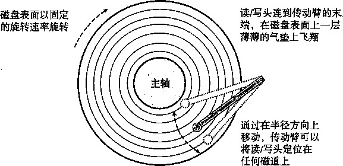
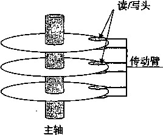
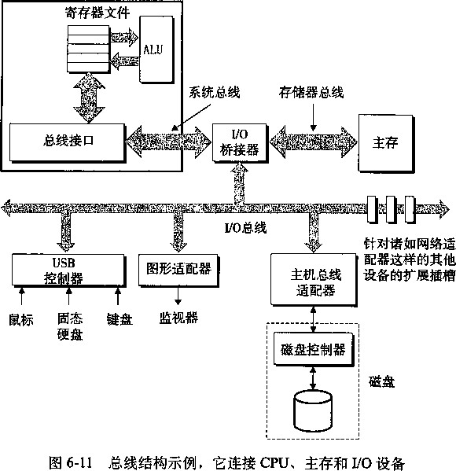
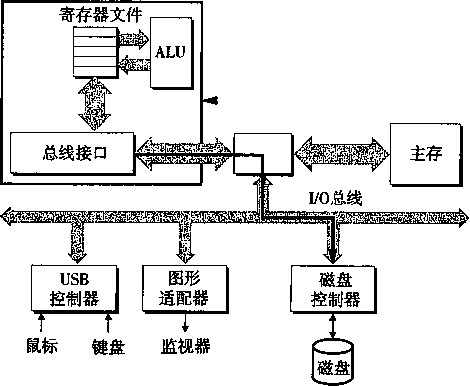
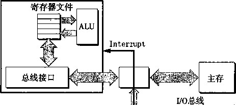
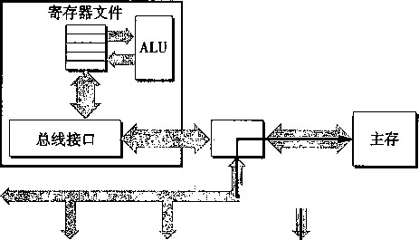
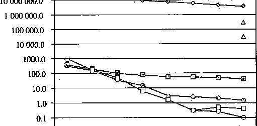
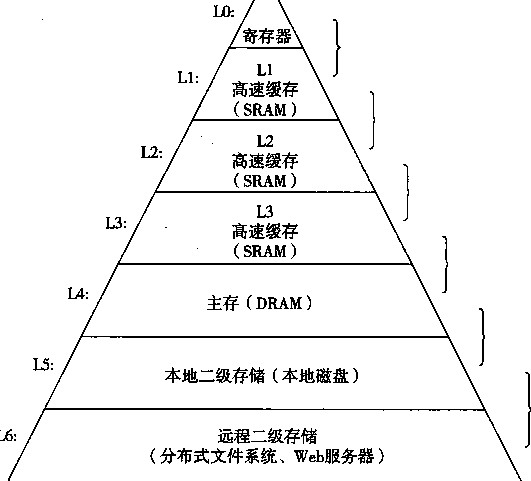

磁盘操作
磁盘用读/写头（read/write head)来读写存储在磁性表面的位，而读写头连接到一个传动 臂（actuator arm) —端，如图6-10a所示。通过沿着半径轴前后移动这个传动臂，驱动器可以将 读/写头定位在盘面上的任何磁道上。这样的机械运动称 为寻道 （seek)。一旦读/写头定位到了 期望的磁道上，那么当磁道上的每个位通过它的下面时，读/写头可以感知到这个位的值（读该 位)，也可以修改这个位的值（写该位)。有多个盘片的磁盘针对每个盘面都有一个独立的读/写 头，如图6-10b所示。读/写头垂直排列，一致行动。在任刻，所有的读/写头都位于同一 个柱面上。

1 a) —个盘片的视图 b)多个盘片的视图
图6-10磁盘的动态特性

在传动臂末端的读/写头在磁盘表面高度大约0.1微米处的一层薄薄的气塑上飞翔（就是字 面上这个意思)，速度大约为80km/h。这可以比喻成将Sears Tower (译者注：一座位于芝加哥 的108层和442米高的摩天大楼）放倒，然后让它在距离地面2.5 cm (1英寸）的髙度上飞行 环绕地球，绕地球一天只需要8秒钟！在这样小的间隙里，盘面上一粒微小的灰尘都像一块巨 石。如果读/写头碰到了这样的一块巨石，读/写头会停下来，撞到盘面——所谓的读/ 写头冲 撞（headcrash)。为此，磁盘总是密封包装的。
磁盘以扇区大小的块来读写数据。对扇区的访 问时间 （access time)有三个主要的部分： 寻 道时间 （seek time)、 旋转时间 （rotational latency) 和传送时间 （transfer time):
•寻道时间：为了读取某个目标扇区的内容，传动臂首先将读/写头定位到包含目标扇区的 磁道上。移动传动臂所需的时间称 为寻道时间。 寻道时间r seek 依 赖于读/写头以前的位置 和传动臂在盘面上移动的速度。现代驱动器中平均寻道时间r avgseek 是通过对几千次对随机 扇区的寻道求平均值来测量的，通常为3〜9ms。一次寻道的最大时间^可以高达 20ms o
•旋转时间：一旦读/写头定位到了期望的磁道，驱动器等待目标扇区的第一个位旋转到读 /写头下。这个步骤的性能依赖于当读/写头到达目标扇区时盘面的位置和磁盘的旋转速度。在 最坏的情况下，读/写头刚刚错过了目标扇区，必须等待磁盘转一整圈。因此，最大旋转延迟, (以秒为单位）是
T 1 60 secs
maxro,ation= RPM X 1 min
平均旋转时间r—是的一半。
•传送时间：当目标扇区的第一个位位于读/写头下时，驱动器就可以开始读或者写该扇区 的内容了。一个扇区的传送时间依赖于旋转速度和每条磁道的扇区数目。因此,我们可以 粗略地估计一个扇区以秒为单位的平均传送时间如下
T 1 1 60 secs
avg —° n = RPM X (平均扇区数/磁道) X 1 min
我们可以估计访问一个磁盘扇区内容的平均时间为平均寻道时间、平均旋转延迟和平均传送 时间之和。例如，考虑一个有如下参数的磁盘：
参数 |
值 |
旋转速率 |
7 200RPM |
‘ ^avg seek |
9ms |
每条磁道的平均扇区数 |
400 |
对于这个磁盘，平均旋转延迟（以ms为单位）是
Tavg rotation — 1,2 X ro tation
=1/2 X (60 secs/7200 RPM) X lOOOms/sec ~4ms
平均传送时间是
^^=60/7200 RPMX 1/400 扇区 / 磁道 X 1000ms/sec ~ 0.02 ms 总之，整个估计的访问时间是
^access 一 ^avg seek+^Lvg rotation ~^^avg transfer
=9 ms+4 ms+0.02 ms =13.02 ms
这个例子说明了一些很重要的问题：
•访问一个磁盘扇区中512个字节的时间主要是寻道时间和旋转延迟。访问扇区中的第一个 字节用了很长时间，但是访问剩下的字节几乎不用时间。
•因为寻道时间和旋转延迟大致是相等的，所以将寻道时间乘2是估计磁盘访问时间的简单 而合理的方法。
•对存储在SRAM中的双字的访问时间大约是4ns,对DRAM的访问时间是60ns。因此， 从存储器中读一个512个字节扇区大小的块的时间对SRAM来说大约是256ns,对DRAM 来说大约是4000ns。磁盘访问时间，大约10ms,比SRAM大约大40 000倍，比DRAM 大约大2500倍。如果我们比较访问一个单字的时间，这些访问时间的差别会更大。
_练习题6.3 估计访问下面这个磁盘上一个扇区的访问时间（以ms为单位）：
参数 |
值 |
旋转速率 ^avg seek 每条磁道的平均扇区数 |
15 000RPM 8ms 500 |
逻辑磁盘块
正如我们看到的那样，现代磁盘构造复杂，有多个盘面，这些盘面上有不同的记录区。为了 对操作系统隐藏这样的复杂性，现代磁盘将它们的构造呈现为一个简单的视图，一个B个扇区 大小的逻 辑块的 序列，编号为0, 1,…， B-U 磁盘中有一个小的硬件/固件设备，称为 磁盘控 制器，维护着逻辑块号和实际（物理）磁盘扇区之间的映射关系。
当操作系统想要执行一个I/O操作时，例如读一个磁盘扇区的数据到主存，操作系统会发送 一个命令到磁盘控制器，让它读某个逻辑块号。控制器上的固件执行一个快速表査找，将一个逻
辑块号翻译成一个 （盘面，磁道，扇区） 的三元组，这个三元组唯一地标识了对应的物理扇区。 控制器上的硬件解释这个三元组，将读/写头移动到适当的柱面，等待扇区移.动到读/写头下, 将读/写头感知到的位放到控制器上的一个小缓冲区中，然后将它们拷贝到主存中。
格式化的磁盘容量
在磁盘可以存储数据之前，它必须被磁盘控制器格式化。这包括用标识扇区的信息填写扇区 之间的间隙，标识出表面有故障的柱面并且不使用它们，以及在每个区中预留出一组柱面作为备 用，如果区中一个或多个柱面在磁盘使用过程中坏掉了，就可以使用这些备用的柱面。因为存在 着这些备用的柱面，所以磁盘制造商所说的格式化容量比最大容量要小。
®练习题6.4假设1MB的文件由512个字节的逻辑块组成，存储在具有如下特性的磁盘驱动器上：
参数• |
值 |
旋转速率 |
10 000RPM |
^avg seek |
5 ms |
平均扇区数/磁道 |
1000 |
表面 |
4 |
扇区大小 |
512字节 |
对于下面的情况，假设程序顺序地读文件的逻辑块，一个接一个，将读/写头定位到第一块上的时间
疋 T aV g seek +^"*avg rotation 0
最好的 情况： 给定逻辑块到磁盘扇区的最好的可能的映射（即顺序的 ）， 估计读这个文件需要的最 优时间（以ms为单位)。
随机的情况：如果块是随机地映射到磁盘扇区的，估计读这个文件需要的时间 （以 ms为单位 ）。
4-连接到I/O设备
像图形卡、监视器、鼠标、键盘和磁盘这样的输入/输出（I/O)设备，都是通过I/O总线, 例如Intel的 外围设备互连 （Peripheral Component Interconnect, PCI)总线连接到CPU和主存的。 系统总线和存储器总线是与CPU相关的，与它们不同，诸如PCI这样的I/O总线设计成与底层 CPU无关。例如，PC和Mac都可以使用PCI总线。图6-11展示了一个典型的I/O总线结构（以 PCI为模型)，它连接了 CPU、主存和I/O设备。
虽然I/o总线比系统总线和存储器总线慢，但是它可以容纳种类繁多的第三方I/O设备。例 如，在图6-11中，有三个不同类型的设备连接到总线。
•通用串行总线（Universal Serial Bus, USB)控制器是一个连接到USB总线的设备的中转 机构，USB总线是一个广泛使用的标准，连接各种外围I/O设备，包括键盘、鼠标、调制 解调器、数码相机、游戏操纵杆、打印机、外部磁盘驱动器和固态硬盘。USB2.0总线的 最大带宽为60MB/S。USB 3.0总线的最大带宽为600MB/S。
•图形卞（或适配器）包含硬件和软件逻辑，它们负责代表CPU在显示器上画像素。
主机总线适配 器将一个或多个磁盘连接到I/O总线，使用的是一个特别 的主机总线接 口定义 的通信协议。两个最常用的这样的磁盘接口是SCSI (读作“scuzzy”）和SATA (读作“sat- uh”)。SCSI磁盘通常比SATA驱动器更快但是也更贵。SCSI主机总线适配器（通常称为 SCSI控制器）可以支持多个磁盘驱动器，与SATA适配器不同，它只能支持一个驱动器。
其他的设备，例如 网络适配器， 可以通过将适配器插入到主板上空 的扩展槽中， 从而连接到 I/O总线，这些插槽提供了到总线的直接电路连接。
访问磁盘
虽然详细描述I/O设备是如何工作的以及如何对它们进行编程超出了我们讨论的范围，但是
我们可以给你一个概要的描述。例如，图6-12总结了当CPU从磁盘读数据时发生的步骤。
CPU

CPU使用一种称 为存储器映射 I/O (memory-mapped I/O)的技术来向I/O设备发出命令（见 图6-12a)。在使用存储器映射I/O的系统中，地址空间中有一块地址是为与I/O设备通信保留 的。每个这样的地址称为一个I/O 端口 （I/O port)。当一个设备连接到总线时，它与一个或多个 端口相关联（或它被映射到一个或多个端口）。
CPU芯片

a) CPU通过将命令、逻辑块号和目的存储器地址写到与磁盘相关联的存储器映射地址，发起一个碰盘读
图6-12读一个磁盘扇区 www.TopSage.com
y i/o总线
USB |
图形 |
磁盘 |
||
控制器 |
适配器 |
控制器 |
键盘 监视器
c)当DMA传送完成时，磁盘控制器用中断的方式通知CPU 图6-12 (续）
b)磁盘控制器读扇区，并执行到主存的DMA传送 CPU芯片

CPU芯片

作为一个简单的例子，假设磁盘控制器被映射到端口 OxaO。随后，CPU可能通过执行 三个对地址OxaO的存储指令，发起磁盘读：第一条指令是发送一个命令字，告诉磁盘发起 一 个读，同时还发送了其他的参数，例如当读完成时，是否中断CPU (我们会在8.1节中讨 论中断）。第二条指令指明应该读的逻辑块号。第三条指令指明应该存储磁盘扇区内容的主 存地址。
当CPU发起了请求之后，在磁盘执行读的'时候，它通常会做些其他的工作。回想一下，一 个1GHz的处理器时钟周期为Ins,在用来读磁盘的16ms时间里，它潜在地可能执行1600万条 指令。 在传输进行时，只是简单地等待，什么都不做，这是一种极大的浪费。
在磁盘控制器收到来自CPU的读命令之后，它将逻辑块号翻译成一个扇区地址，读该扇 区的内容，然后将这些内容直接传送到主存，不需要CPU的干涉（见图6-12b)。设备可以自 己执行读或者写总线事务，而木需要CPU干涉的过程，这个过程称为直 接存储器访问 （Direct Memory Access, DMA)。这种数据传送称为 DMA 传送（DMA transfer)。
在DMA传送完成，磁盘扇区的内容被安全地存储在主存中以后，磁盘控制器通过给CPU 发送一个中断信号来通知CPU (见图6-12c)。基本思想是中断会发信号到CPU芯片的一个外部 引脚上。这会导致CPU暂停它当前正在做的工作，跳转到一个操作系统例程。这个程序会记录 下I/O已经完成，然后将控制返回到CPU被中断的地方。
6.商用磁盘的剖析
图 6-13 Seagate Cheetah 15K.4 的构造和性能。来源： www.seagate.com
磁盘制造商很少会公布关于每个记录区构造的详细信息。不过，卡内基-梅隆大学的存储技 术研究人员开发出了一个很有用的工具，称为DIXtrac,它能自动发现大量关于SCSI磁盘构造 和性能的低级信息[92]。例如，DIXtrac能够发现示例的Seagate磁盘详细的区构造，如图6-14 所示。表中的每一行都描述了磁盘表面15个区中的一个。第一列给出的是区号，区0是最外面 的，而区14是最里面的。第二列给出的是该区中每条磁道中包含的扇区数。第三列显示的是分
Zone number |
Sectors per track |
Cylinders per zone |
Logical blocks per zone |
(outer) 0 |
864 |
3201 |
22,076,928 |
1 |
844 |
3200 |
21,559,136 |
2 |
816 |
3400 |
22,149,504 |
3 |
806 |
3100 |
19,943,664 |
4 |
795 |
3100 |
19,671,480 |
5 |
768 |
3400 |
20,852,736 |
6 |
768 |
3450 |
21,159,936 |
7 |
725 |
3650 |
21,135,200 |
8 |
704 |
3700 |
20,804,608 |
9 |
672 |
3700 |
19,858,944 |
10 |
640 |
3700 |
18,913,280 |
11 |
603 |
3700 |
17,819,856 |
12 |
576 |
3707 |
17,054,208 |
13 |
528 |
3060 |
12,900,096 |
(inner) 14 |
— |
— |
— |
图6-14 Seagate Cheetah 15K.4的区图。来源：DIXtrac自动磁盘驱动器描述工具[92]。没有 区14的数据
Geometry attribute |
Value |
||
Platters |
4 |
||
Surfaces (read/write heads) |
8 |
||
Surface diameter |
3.5 in. |
||
Sector size |
512 bytes |
||
Zones |
15 |
||
Cylinders |
50,864 |
||
Recording density (max) |
628,000 bits/in. |
||
Track density |
85,000 tracks/in. |
||
Areal density (max) |
53.4 Gbits/sq. in. |
||
Formatted capacity |
146:8 GB |
||
Performance attribute |
Value |
||
Rotational rate |
15,000 RPM |
||
Avg. rotational latency |
2 ms |
||
Avg. seek time |
4 ms |
||
Sustained transfer rate |
58-96 MB/s |
||
磁盘制造商在他们的网页上公布了许多高级技术信息。例如，Cheetah 15K.4是最早由 Seagate在2005年制造的SCSI 磁盘。 如果我们查询Seagate网页上的在线产品手册，可以看到 如图6-13所示的构造和性能信息。
配给该区的柱面数量。每个柱面是由八条磁道组成的，每一条磁道源自一个盘面。类似地，第四 列给出了分配给每个区的逻辑块总数,跨过了所有8个盘面。（这个工具不能提取最里面那个区 的合法数据，所以就省略了。)
这个区图揭示了一些关于Seagate磁盘的有趣的事实。首先，靠外面的区（周长更长）比靠 里面的区有更多的扇区。其次，每个区有比逻辑块更多的扇区（你可以自己检査一下)。 备用扇 区形 成一个 备用柱面池。 如果一个扇区上的记录材料坏了，磁盘控制器会自动地将该柱面上的逻 辑块重映射到一个可用的备用柱面上。所以，我们看到，逻辑块的概念不仅能够提供给操作系统 —个更简单的接口，还能够提供一层抽象，使得磁盘能够更健壮。就像我们在第9章中研究虚拟 存储器时将会看到的那样，这种通用的抽象思想非常强大。
_练习题6.5使用图6-14中的区图，确定下面这两个区中备用柱面的数量：
区0
区8 6.1.3固态硬盘
固态硬盘（Solid State Disk, SSD)是一种基于闪存的存储技术（参见6.1.1节)，在某些情 况下是传统旋转磁盘的极有吸引力的替代产品。图6-15展示了它的基本思想。SSD包插到I/O 总线上标准硬盘插槽（通常是USB或SATA)中，行为就和其他硬盘一样，处理来自CPU的读 写逻辑磁盘块的请求。一个SSD包由一个或多个闪存芯片和闪存翻译层(flash translation layer) 组成，闪存芯片替代传统旋转磁盘中的机械驱动器，而闪存翻译层是一个硬件/固件设备，扮演 与磁盘控制器相同的角色，将对逻辑块的请求翻译成对底层物理设备的访问。
i/o总线
闪存
翻译层
闪存
块0 块B-1
页0 |
页1 |
页P-1 |
图6-15固态硬盘（SSD)
读 |
写 |
||
顺序读吞吐量 |
250MB/S |
顺序写吞吐量 |
170MB/S |
随机读吞吐量 |
140MB/S |
随机写吞吐量 |
14MB/S |
随机读访问时间 |
30ns |
随机写访问时间 |
300ns |
图6-16 —个典型的固态硬盘的性能特性。来源：Intel X25-E SATA固态硬盘驱动器产品手册
SSD有着与旋转磁盘不同的性能特性。如图6-16所示，顺序读和写（CPU按顺序访问逻辑 磁盘块）性能相当，顺序读比顺序写稍微快一点。不过，当按照随机顺序访问逻辑块时，写比读 慢一个数量级。
随机读和写的性能差别是由底层闪存基本属性决定的。如图6-15所示，一个闪存由5个块 的序列组成，每个块由P页组成。通常，页的大小是512〜4KB,块是由32〜128页组成的, 块的大小为16〜512KB。数据是以页为单位读写的。只有在一页所属的块整个被擦除之后，才 能写这一页（通常是指该块中的所有位都被设置为1)。不过，一旦一个块被擦除了，块中每一 个页都可以不需要再进行擦除就写一次。在大约进行100 000次重复写之后，块就会磨损坏。一 旦一个块磨损坏之后，就不能再使用了。
随机写很慢，有两个原因。首先，擦除块需要相对较长的时间，1ms级的，比访问页所需时 间要高一个多数量级。其次，如果写操作试图修改一个包含已经有数据（也就是不全为1)的页 P, 那么这个块中所有带有用数据的页都必须被拷贝到一个新（擦除过的）块，然后才能进行对 页P的写。制造商在已经闪存翻译层中实现了复杂的逻辑，试图抵消擦写块的高昂代价，最小化 内部写的次数，但是随机写的性能不太可能能够和读一样好。
比起旋转磁盘，SSD有很多优点。它们由半导体存储器构成，没有移动的部件，因而随机访 问时间比旋转磁盘要快，能耗更低，同时也更结实。不过，也有一些缺点。首先，因为反复写之 后，闪存块会磨损，所以SSD也容易磨损。闪存翻译层中的平 均磨损 （wear leveling)逻辑试图 通过将擦除平均分布在所有的块上来最大化每个块的寿命，但是最基本的限制还是没变。其次, SSD每字节比旋转磁盘贵大约100倍，因此常用的存储容量是旋转磁盘的1%。不过，随着SSD 变得越来越受欢迎，它的价格下降得非常快，而两者的价格差也在减少。
在移动音乐设备中，SSD已经完全取代了旋转磁盘，在笔记本电脑中也越来越多地作为硬盘 的替代品，甚至在台式机和服务器中也开始出现了。虽然旋转磁盘还是会继续存在，但是显然， SSD是一项重要的新的存储技术。
_练习题6.6正如我们巳经看到的，SSD的一个潜在的缺陷是底层闪存会磨损。例如，一个主要的制
造商保证他们的SSD能够经得起1PB(10 15 字节）的随机写。给定这样的假设，根据下面的工作负载，
估计图6-16中的SSD的寿命 （以年 为单位）：
A•顺序写的最糟情况：以170MB/S (该设备的平均顺序写吞吐量）的速度持续地写SSD。
B•随机写的最糟情况：以14MB/S (该设备的平均随机写吞吐量）的速度持续地写SSD。
平均情况：以20GB/天（某些计算机制造商在他们的移动计算机工作负载模拟测试中假设的平均每 天写速率）的速度写SSD。
6.1.4存储技术趋势
从我们对存储技术的讨论中，可以总结出几个很重要的思想。
不同的存储技术有不同的价格和性能折中。 SRAM比DRAM快一点,而DRAM比磁盘要快 很多。 另一方面，快速存储总是比慢速存储要贵的。SRAM每字节的造价比DRAM高，DRAM 的造价又比磁盘高得多。SSD位于DRAM和旋转磁盘之间。
不同存储技术的价格和性能属性以截然不同的速率变化着。 图6-17总结了从1980年以来的 存储技术的价格和性能属性，最早的PC是在那一年提出的。这些数字是从以前的贸易杂志中和 Web上挑选出来的。虽然它们是从非正式的调査中得到的，但是这些数字还是能揭示出一些有 趣的趋势的。
自从1980年以来，SRAM技术的成本和性能基本上是以相同的速度改善的。访问时间 下降了大约200倍，而每兆字节的成本下降了 300倍（见图6-17a)。不过，DRAM和磁盘 的变化趋势更大，而且更不一致。DRAM每兆字节的成本下降了 130 000倍（超过了五个数 量级），而DRAM的访问时间只下降了大约10倍（见图6-17b)。磁盘技术有和DRAM相同 的趋势，甚至变化更大。从1980年以来，磁盘存储的每兆字节成本暴跌了 1 000 000倍（超 过了六个数量级），但是访问时间提高得很慢，只有30倍左右（见图6-15C)。这些惊人的长 期趋势突出了存储器和磁盘技术的一个基本事实：增加密度（从而降低成本）比降低访问时 间更容易。
DRAM 和磁盘的性能滞后于 CPU 的性能。 正如我们在图6-17d中看到的那样，从1980年到 2010年，CPU周期时间提高了 2500倍。如果我们看 有效周期时间 （effective cycle time)定义为 一个单独的CPU (处理器）的周期时间除以它的处理器核数，那么从1980年到2010年的提高 还要大一些，为10 000倍。CPU性能曲线在2003年附近的突然变化反映的是多核处理器的出现 (参见后面的解释)，在这个分割点之后，单个核的周期时间实际上增加了一点点，然后又开始下 降，不过比以前的速度要慢一些。
注意，虽然SRAM的性能滞后于CPU的性能，但是SRAM的性能还是在保持增长。然而， DRAM和磁盘性能与CPU性能之间的差距实际上是在加大的。直到2003年左右多核处理器的 出现，这个性能差距都是延迟的一个函数，DRAM和磁盘的访问时间比单个处理器的周期时间 提髙得更慢。不过，随着多核的出现，这个性能越来越成为了一个吞吐量的函数，多个处理器核 并发地向DRAM和磁盘发请求。
图6-18清楚地表面了各种趋势，以半对数为比例（semi-log scale),画出了图6-17中的访问 时间和周期时间。
度量标准 |
1980 |
1985 |
1990 |
1995 |
2000 |
2005 |
2010 |
2010:1980 |
美元/MB |
19 200 |
2 900 |
320 |
256 |
100 |
75 |
60 |
320 |
访问时间（ns) |
300 |
150 |
35 |
15 |
3 |
2 |
1.5 |
200 |
a) SRAM趋势
度量标准 |
1980 |
1985 |
1990 |
1995 |
2000 |
2005 |
2010 |
2000:1980 |
美元/mb |
8000 |
880 |
100 |
30 |
1 |
0.1 |
0.06 |
130 000 |
访问时间（ns) |
375 |
200 |
100 |
70 |
60 |
50 |
40 |
9 |
典型的大小（MB) |
0.064 |
0.256 |
4 |
16 |
64 |
2000 |
8 000 |
125 000 |
b) DRAM趋势
度量标准 |
1980 |
1985 |
1990 |
1995 |
2000 |
2005 |
2010 |
2000:1980 |
美元/MB |
500 |
100 |
8 |
0.30 |
0.01 |
0.005 |
0.0003 |
500 |
访问时间（ms) |
87 |
75 |
28 |
10 |
8 |
5 |
3 |
29 |
典型的大小（MB) |
1 |
10 |
160 |
1000 |
20 000 |
160 000 |
1 500 000 |
1 500 000 |
c)旋转磁盘趋势
度量标准 |
1980 |
1985 |
1990 |
1995 |
2000 |
2003 |
2005 |
2010 |
2000:1980 |
Intel CPU |
8 080 |
80 286 |
80 386 |
Pent. |
p-m |
Pent.4 |
Core 2 |
Core i7 |
— |
CPU时钟频率 . (MHz) |
1 |
60 |
20 |
150 |
600 |
3300 |
2000 |
2500 |
2500 |
CPU时钟周期（ns) |
1000 |
166 |
50 |
6 |
1.6 |
0.30 |
0.50 |
0.4 |
2500 |
Cores |
1 |
1 |
1 |
1 |
1 |
1 |
2 |
4 |
4 |
Eff.cycle time(ns) |
1000 |
166 |
50 |
6 |
1.6 |
0.30 |
0.25 |
0.10 |
10 000 |
d) CPU趋势 图6-17存储和处理器技术发展趋势
100 000 000.0
(S)屉 fe

+磁盘寻道时间 备 SSD写时间 ~A~SSD读时间 DRAM访问时间 + SRAMi方问时间 CPU周期时间 +有敢CPU周期时间
0.0 H—I 1 1 1 r
1980 1985 1990 1995 2000 2003 2005 2010
年份
图6-18磁盘、DRAM和CPU速度之间逐渐增大的差距
正如我们将在6.4节中看到的那样，现代计算机频繁地使用基于SRAM的高速缓存，试 图弥补处理器-存储器之间的差距。这种方法行之有效是因为应用程序的一个称为局部性 (locality)的基本属性，接下来我们就讨论这个问题。
当周期时间保持不变：多核处理器的到来
计算机历史是由一些在工业界和整个世界产生深远变化的单个事件标记出来的。有趣的是， 这些变化点趋向于每十年发生一次：20世纪50年代Fortran的提出，20世纪60年代早期IBM 360的出现，20世纪70年代早期Internet的曙光（当时称为APRANET), 20世纪80年代早期 IBMPC的出现，以及20世纪90年代万维网（World Wide Web)的出现。
最近的这样的事件出现在21世纪初，当计算机制造商迎头撞上了所谓的“能量墙”（power wall),发现他们无法再像以前一样增加CPU的时钟频率了，因为如果那样芯片的功耗会太大。 解决方法是用多个小处理器核（core)取代单个大处理器，从而提高性能，每个完整的处理器能 够独立地、与其他核并行地执行程序。这种多核（multi-core)方法部分有效，因为一个处理器 的功耗正比于/>=/(> 2 ,这里/是时钟频率，C是电容，而v是电压。电容C大致上正比于面积， 所以只要所有核的总面积不变，多核造成的能耗就能保持不变。只要特征尺寸继续按照摩尔定律 指数性的下降，每个处理器中的核数，以及每个处理器的有效性能，都会继续增加。
从这个时间点以后，计算机越来越快，不是因为时钟频率的增加，而是因为每个处理器中核 数的增加，也因为体系结构上的创新提高了在这些核上运行的程序的效率。我们可以从图6-18 中艮清楚地看到这个趋势。CPU周期时间在2003年达到最低点，然后实际上是有开始上升的， 然后变得平稳，然后又开始以比以前慢一些的速率下降。不过，由于多核处理器的出现（2004 年出现双核，2007年出现四核），有效周期时间以接近于以前的速率持续下降。
®练习题6.7使用图6-17C中从2000年到2010年的数据，估计到哪一年你可以以500美元的价格买到
一个1PB (10 15 字节）的旋转磁盘。假设美元价值不变（没有通货膨胀)。
6.2局部性
一个编写良好的计算机程序常常具有良好的局部性（locality)。也就是说，它们倾向于引用 邻近于其他最近引用过的数据项的数据项，或者最近引用过的数据项本身。这种倾向性，被称为 局部性原理（principle of locality),是一个持久的概念，对硬件和软件系统的设计和性能都有着 极大的影响。
局部性通常有两种不同的形式：时间局部性（temporal locality)和空间局部性（spatial locality)。在一个具有良好时间局部性的程序中，被引用过一次的存储器位置很可能在不远的将 来再被多次引用。在一个具有良好空间局部性的程序中，如果一个存储器位置被引用了一次，那 么程序很可能在不远的将来引用附近的一个存储器位置。
程序员应该理解局部性原理 ， 因为一般而言 ， 有良好局部性的程序比局部性差的程序运行得 更快。现代计算机系统的各个层次，从硬件到操作系统、再到应用程序，它们的设计都利用了局 部性。在硬件层，局部性原理允许计算机设计者通过引入称为高速缓存存储器的小而快速的存储 器来保存最近被引用的指令和数据项，从而提高对主存的访问速度。在操作系统级，局部性原理 允许系统使用主存作为虚拟地址空间最近被引用块的高速缓存。类似地，操作系统用主存来缓存 磁盘文件系统中最近被使用的磁盘块。局部性原理在应用程序的设计中也扮演着重要的角色。例 如，Web浏览器将最近被引用的文档放在本地磁盘上，利用的就是时间局部性。大量的Web服 务器将最近被请求的文档放在前端磁盘高速缓存中，这些缓存能满足对这些文档的请求，而不需 要服务器的任何干预。 •
对程序数据引用的局部性
考虑图6-19a中的简单函数，它对一个向量的元素求和。这个程序有良好的局部性吗？为 了回答这个问题，我们来看看每个变量的引用模式。在这个例子中，变量sum在每次循环迭代 中被引用一次，因此，对于sum来说，有好的时间局部性。另一方面，因为sum是标量，对于 sum来说，没有空间局部性。
正如我们在图6-1%中看到的，向量v的元素是被顺序读取的，一个接一个 ， 按照它们存储 在存储器中的顺序（为了方便，我们假设数组是从地址0开始的）。因此，对于变量v,函数有 很好的空间局部性，但是时间局部性很差 , 因为每个向量元素只被访问一次。因为对于循环体 中的每个变量 ， 这个函数要么有好的空间局部性，要么有好的时间局部性，所以我们可以断定 sumvec函数有良好的局部性。
1. int sumvec (int v |
[N]) |
|||||||||
2 { |
||||||||||
3 int i, sum A |
= 0; |
|||||||||
I 5 for (i = 0; |
i < N; i++) |
|||||||||
6 sum += |
v[i]; |
|||||||||
7 return sum; |
||||||||||
8 } |
||||||||||
地址 |
0 |
4 |
8 |
12 |
16 |
20 |
24 |
28 |
||
内容 |
v o |
v i |
V 2 |
V 3 |
V 4 |
V 5 |
V 6 |
V 7 |
||
访问顺序 |
1 |
2 |
3 |
4 |
5 |
6 |
7 |
8 |
||
b)
图6-19 a) 一个具有良好局部性的程序；b)向量v的引用模式（W=8)。注惫如何按照向量 元素存储在存储器中的顺序来访问它们
我们说像 sumvec 这样顺序访问一个向量每个元素的函数，具有步长为 1 的引用模式 (stride-1 reference pattern) (相对于元素的大小 )。 有时我们称步长为 1 的引用模式为顺序引用模 式 （sequential reference pattern )。 一个连续向量中，每隔（个元素进行访问，就被称为步长为 k 的引用模式 （ stride-k reference pattern )。 步长为 1 的引用模式是程序中空间局部性常见和重要的 来源。一般而言，随着步长的增加，空间局部性下降。
对于引用多维数组的程序来说，步长也是一个很重要的问题。考虑图6-20a中的函数 sumarrayrows, 它对一个二维数组的元素求有I。双重嵌套循环按照行优先顺序（row-major
order)读数组的元素。也就是说，内层循环读第一行的元素，然后读第二行，依此类推。函数 sumarrayrows具有良好的空间局部性，因为它按照数组被存储的行优先顺序来访问这个数组 (见图6-20b)。其结果是得到一个很好的步长为1的弓丨用模式和良好的空间局部性。
int sumarrayrows(int a[M][N])
{
int i, j, sum = 0;
4
for (i : 0; i < M; i++)
for Cj = 0; j < N; j++)
sum += a[i] [j] ;
return sum;
地址 0 4 8 12 16 20
内容 «00 «01 ^02 a 10 a ll a l2
a)
访问顺序 1 2 3 4 5 6
b)
图 6-20 a) 另一个具有良好局部性的程序； b) 数组 a 的引用模式 （M = 2, N = 3 )。有良好的 空间局部性，是因为数组是按照与它存储在存储器中一样的行优先顺序来被访问的
地址 0 4 8 12 16 20
内容 floo «oi fl 02 °io a n a n
访问顺序 13 5 2 4 6
一些看上去很小的对程序的改动能够对它的局部性有很大的影响。例如，图6-21a中的函数 sumarraycols计算的结果和图6-20a中函数sumarrayrows的一样。唯一的区别是我们交换 了/和*/的循环。这样交换循环对它的局部性有何影响？函数sumarraycols的空间局部性很 差，因为它按照列顺序来扫描数组，而不是按照行顺序。因为C数组在存储器中是按照行顺序 来存放的，结果就得到步长为AT的引用模式，如图6-21b所示。
1 2 |
int sumarrayrows(int a[M][N]) •r |
|
3 4 |
int i, j, sum = |
0； |
5 |
for (i = 0; i < |
M; i++) |
6 |
for (j = 0; |
j < N; j++) |
7 |
sum += a |
Ci] [j]; |
8 9 |
return sum; > |
|
a)
b)
图 6-21 a) 一 个空间局部性很差的程序； b) 数组 a 的引甩模式 （ M=2, N=3) 0 函数的空间 局部性很差，这是因为它使用步长为 N 的引用模式来扫描存储器
取指令的局部性
因为程序指令是存放在存储器中的 ， CPU必须取出（读出）这些指令，所以我们也能够评价 一个程序关于取指令的局部性。例如，图6-19中for循环体里的指令是按照连续的存储器顺序执 行的，因此循环有良好的空间局部性。因为循环体会被执行多次，所以它也有很好的时间局部性。
代码区别于程序数据的一个重要属性是在运行时它是不能铖修改的。当程序正在执行时, CPU只从存储器中读出它的指令。CPU决不会重写或修改这些指令。
局部性小结
在这一节中，我们介绍了局部性的基本思想，还给出了一些量化评价一个程序中局部性的简 单原则：
重复引用同一个变量的程序有良好的时间局部性。
对于具有步长为t的引用模式的程序，步长越小，空间局部性越好。具有步长为1的引 用模式的程序有很好的空间局部性。在存储器中以大步长跳来跳去的程序空间局部性会
很差 。
•对于取指令来说，循环有好的时间和空间局部性。循环体越小 ， 循环迭代次数越多，局部 性越好。
在本章后面，在我们学习了高速缓存存储器以及它们是如何工作的之后，我们会介绍如何用高速 缓存命中率和不命中率来量化局部性的概念。你还会弄明白为什么有良好局部性的程序通常比局 部性差的程序运行得更快。尽管如此，了解如何看一眼源代码就能获得对程序中局部性的髙层次 的认识 ， 是程序员要掌握的一项有用而且重要的技能。
_练习题6.8改变下面函数中循环的顺序 ， 使得它以步长为1的引用模式扫描三维数组a:
int sumarray3d(int a[N][N][N])
{
int i, j, k, sum = 0;
4
for (i = 0; i < N; i++) {
for (j = 0; j < N; j++) i
for (k = 0; k < N;'k++) {
sum += a[k] [i] [j];
‘ 9 }
10 } f
}
return sum;
>
1 |
#define N 1000 |
2 |
|
3 |
typedef struct { |
4 |
int vel [3]; |
5 |
int acc [3] ; |
6 |
} point; |
7 |
|
8 |
point p [N] ; |
a) structs 数组
®练习题6.9图6-22中的三个函数，以不同的空间局部性程度，执行相同的操作。请对这些函数就空 间局部性进行排序。解释你是如何得到排序结果的。
1 2 |
void clearl(point *p, int n) X |
|
3 |
int |
i，j； |
4 5 |
for |
(i = 0; i < n; i++) { |
6 |
for (j : 0; j < 3; j++) |
|
7 |
p[i] .vel [j] = 0; |
|
8 |
for (j = 0; j < 3; j++) |
|
9 |
p[i] .acc[j] = 0; |
|
10 |
> |
|
11 |
> |
|
图6-22练习题6.9的代码示例
1 |
void clear2(point *p, int n)* |
|
2 |
{ |
_ ； |
3 |
int |
i, j; |
4 |
||
5 , |
for |
(i = 0; i < n; i++) { |
6 |
for (j = 0; j < 3; j++) ■[ |
|
7 |
p[i] .vel [j] = 0; |
|
8 |
p[i] -acc[j] = 0; |
|
9 |
> |
|
10 |
} |
|
11 |
> |
|
c) clear2 函数
l |
void clear3(point *p, int n) |
|
2 |
{ |
|
3 |
1 int |
i, j ； |
4 5 |
for |
(j = 0; j < 3; j++) i |
6 |
for (i = 0; i < n; i++) |
|
7 |
p[i] .vel[j] = 0; |
|
8 |
for (i = 0; i < n; i++) |
|
9 |
p[i] .acc[j] = 0; |
|
10 |
> |
|
11 |
> |
|
d) clear3 函数
clearl 函数
6.3 存储器层次结构
6.1节和6.2节描述了存储技术和计算机软件的一些基本的和持久的属性：
•存储技术：不同存储技术的访问时间差异很大。速度较快的技术每字节的成本要比速度较 慢的技术高，而且容量较小。CPU和主存之间的速度差距在增大。
计算机软件 ：一个编写良好的程序倾向于展示出良好的局部性。
CPU寄存器保存着从髙速 缓存存储器取出的字
L1髙速缓存保存着从L2 高速缓存取出的缓存行
L2高速缓挪存着从L3 高速缓存取出的缓存行
更大 更慢和 (每字节） 差别更低的 存储设备

L3髙速缓存保存着从主存 高速缓存取出的缓存行
主存保存着从本地磁盘 取出的磁盘块
本地磁盘保存着从远程网络 服务器磁盘上取出的文件
图6-23存储器层次结构
其他的存储器层次结构
我们向你展示了一个存储器层次结构的示例，但是其他的组合也是可能的，而且确实也^艮常 见。例如，许多站点将本地磁盘备份到存档的磁带上。其中有些站点，在需要时是由人来手工地 装好磁带的。而在其中其他站点则是由磁带机器人自动地完成这项任务的。无论在哪种情况下， 磁带都是存镩器层次结构中的一层，在本地磁盘那一层下面,那些一般的原则也同样适用于它。 磁带每字节比磁盘更便宜，它允详站点将本地磁盘的多个快照存档。代价是磁带的访问时间要比
计算中一个喜人的巧合是，硬件和软件的这些基本属性互相补充得很完美。它们这种相互补 充的性质使人想到一种组织存储器系统的方法,称为存储器层次结构（memory hierarchy),所有 的现代计算机系统中都使用了这种方法。图6-23展示了一个典型的存储器层次结构。一般而言, 从高层往底层走，存储设备变得更慢、更便宜和更大。在最高层（L0),是少量快速的CPU寄 存器，CPU可以在一个时钟周期内访问它们。接下来是一个或多个小型到中型的基于SRAM的 高速缓存存储器，可以在几个CPU时钟周期内访问它们。然后是一个大的基于DRAM的主存, 可以在几十到几百个时钟周期内访问它们。接下来是慢速但是容量很大的本地磁盘。最后，有些 系统甚至包括了一层附加的远程服务器上的磁盘，要通过网络来访问它们。例如，像安德鲁文件 系统（Andrew File System, AFS)或者网络文件系统（Network File System, NFS)这样的分布 式文件系统，允许程序访问存储在远程的网络服务器上的文件。类似地，万维网允许程序访问存 储在世界上任何地方的Web服务器上的远程文件。
[
更小 更快和
(每字节）
成本更髙的 存搬备
磁盘的更长。来看另一个例子，固态硬盘在存储器层次结构中扮演着越来越重要的角色，连接起 DRAM和旋转磁盘之间的鸿沟。
存储器层次结构中的缓存
一般而言，高速缓存（cache,读作“cash”）是一个小而快速的存储设备，它作为存储在 更大、也更慢的设备中的数据对象的缓冲区域。使用高速缓存的过程称为缓存（caching,读作 “cashing”)。
存储器层次结构的中心思想是，对于每个t位于A层的更快更小的存储设备作为位于奸1 层的更大更慢的存储设备的缓存。换句话说，层次结构中的每一层都缓存来自较低一层的数据对 象。例如，本地磁盘作为通过网络从远程磁盘取出的文件（例如Web页面）的缓存，主存作为 本地磁盘上数据的缓存，依此类推,直到最小的缓存CPU寄存器集合。
图6-24展示了存储器层次结构中缓存的一般性概念。第奸1层的存储器被划分成连续的 数据对象片（chunk),称为块（block)。每个块都有一个唯一的地址或名字，使之区别于其他 的块9块可以是固定大小的（通常是这样的)，也可以是可变大小的（如存储在Web服务器上 的远程HTML文件）。例如，图6-24中第奸1层存储器被划分成16个大小固定的块，编号为 0 〜15。
类似地，第A层的存储器被划务成较少的块的集合，每个块的大小与奸1层的块的大小一 样。在任何时刻，第A层的缓存包含第奸1层块的一个子集的拷贝。例如，在图6-24中， 第k 层的缓存有4个块的空间，当前包含块4、9、14和3的拷贝。
数据总是以块大小为传送单元（transfer unit)在第层和第奸1层之间来回拷贝的。虽然在 层次结构中任何一对相邻的层次之间块大小是固定的，但是其他的层次对之间可以有不同的块大 小。例如，在图6-23中，L1和L0之间的传送通常使用的是1个字的块。L2和L1之间（以及 L3和L2之间、L4和L3之间）的传送通常使用的是8〜16个字的块。而L5和L4之间的传送 用的是大小为几百或几千字节的块。一般而言，层次结构中较低层（离CPU较远）的设备的访 问时间较长，因此为了补偿这些较长的访问时间，倾向于使用较大的块。
第灸层：1 4 11 9 II 14
•.; 禮 : 广 .. 切 ."... 、 ....…
第灸层更小、更快、更昂贵的设备 缓存着第hi层块的一个子集
数据以块大小为传输 单元在层与层之间拷贝
]1 1 1 1 2 丨 厂
T rnnnn^
第灸+1层:
第紅i层更大、更慢、更便宜的 设备被划分成块
图6-24存储器层次结构中基本的缓存原理
1 •缓存命中
当程序需要第奸1层的某个数据对象rf时，它首先在当前存储在第层的一个块中査找 (L 如果rf刚好缓存在第A层中，那么就是我们所说的缓存命中（cachehit)。该程序直接从第A层读 取rf,根据存储器层次结构的性质，这要比从第奸1层读取rf更快。例如，一个有良好时间局部